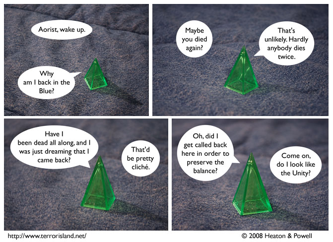

Strip #348
— Wednesday, September 3, 2008
The Unity is more visible.
Notes, Thoughts, &c.
Ben’s Notes
OK, I was going to save these for after the election, but I just can’t hold back that long. Here are some AMAZING anagrams of the vice presidential candidates (well, anagrams of their names):
Sarah Plain
Joe In Bed
Lewis’s Notes
Wow, Ben, way to politicize our comic.